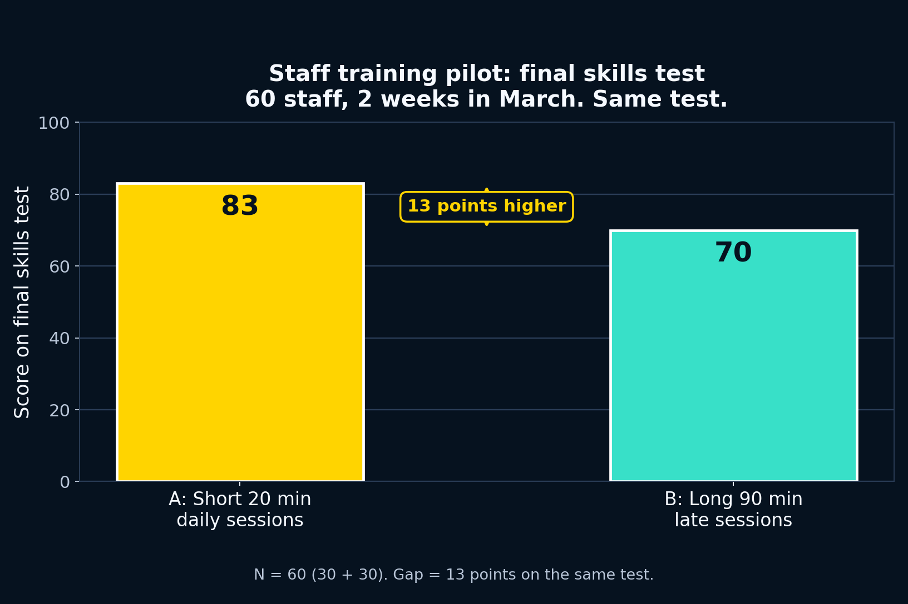

Today you will learn
How to explain one bar chart to a busy manager. Same pilot numbers from Days 15 to 17, now at work. No new numbers to learn. Big picture first, two numbers, then what it means with This suggests that.
You already know: overview with no numbers from Day 2, key numbers from Day 3, formal tone from Day 7, careful may from Day 13, short plus Together from Days 15 and 16. Today we reuse them for work.
Class draft: 130 to 150 words. Homework to 180. Use Next to move. Arrow keys also move.
Work vs exam chart Done
2 minRead. Choose.
A busy manager first asks:
Answer key
b. So what for us. Managers act on meaning, not on every bar.
Read our model Done
3 minRead one time. Then answer.

| Group | Training | Score |
|---|---|---|
| A, 30 staff | Short 20 minutes daily | 83 |
| B, 30 staff | Long 90 minutes late | 70 |
Pilot: 60 staff, 2 weeks in March. Same final skills test. We use this chart all lesson.
Staff training pilot, March, 60 staff, two weeks. Overall, short daily sessions did clearly better than long late sessions. Group A did short 20 minute sessions each day and scored 83 on the final skills test. Group B did long 90 minute late sessions and scored 70. This means Group A scored 13 points higher than Group B, compared to the same test. This suggests that short regular training helps staff learn and stay fresh. Long late sessions may cause tiredness, which is linked to lower scores. We could keep short daily sessions for the next team and check results again in one month.
About 140 words. ODIR order: Overview, Detail, Implication, Recommendation.
Which group won?
Answer key
a. Group A won, 83 vs 70, gap 13. Who is 60 staff. Time is 2 weeks. Test is the same skills test.
Overview first Done
3 minNo numbers in the overview. Same Day 2 rule.
Best overview?
Answer key
a. Big picture with no numbers. Line b lists numbers with no point.
Two numbers only Done
2 minManager has one minute. Pick 83 vs 70.
Answer key
1. 83. 2. 70. 3. 13. Two scores plus one gap plus test name. That is enough.
Compare well Done
2 minUse compared to and higher than.
Answer key
1. compared to. 2. higher than. Check than spelling, not then.
Number or meaning? Done
2 minFact or so what.
Which is meaning for the manager?
Answer key
b. Meaning answers so what. Numbers alone do not tell the manager what to do.
This suggests that Done
3 minCopy both. Suggests plus may.
1. Join: This suggests that short regular training helps staff learn and stay fresh.
2. Limit: Long late sessions may cause tiredness, which is linked to lower scores.
Answer key
Copy both lines exactly. Check suggests with s, that with a full clause, may once. Your draft will reuse these two lines.
Careful for managers Done
3 minGood advice is careful. No big promises.
Which line is best?
Which ending is careful?
Answer key
First: b. Second: a. Give numbers. Stay careful with suggests and may.
Formal and short Done
2 minWhich sounds work?
Best line for a manager?
Answer key
a. Formal plus short: could plus sessions plus team. Gonna and stuff are not work words.
Useful phrases Done
2 minBank: Overall, compared to, higher than, This suggests that, may, We could.
Answer key
1. Overall. 2. compared to. 3. This suggests that. 4. We could. Check commas and spelling. Copy these into your draft.
Build one together Done
5 minStaff pilot. Same ODIR order. Do with your teacher.
Chart: A 83, B 70, gap 13. Pilot: 60 staff, 2 weeks in March. Same skills test.
Answer key
Model: Overall, short daily won. A scored 83, compared to 70. This suggests that short training helps. We could keep short sessions. Add full details in Activity 13.
Plan with chart table Done
2 minChoose one ending. Copy its row. Each number has a job.
My ending, choose one:
Chart table, what each number means: Who: 60 staff joined the pilot, 30 in A, 30 in B. Time: 2 weeks in March. Groups: A did short 20 minute daily sessions, B did long 90 minute late sessions. Test: same final skills test. Result: A 83, B 70, gap 13 points.
Answer key
Both good. M is easiest. E uses the same numbers with a tiredness lens. Example M: M, Overall short daily won, 83 vs 70 gap 13, fresh mornings help. Example E: E, Overall long late lost, 83 vs 70, late harms focus. Keep the same 2 numbers in your draft.
Write your draft 7 min Done
Write alone130 to 150 words. Use Overview, Detail, Implication, Recommendation.
Answer key, models for Ending M and Ending E
M model, about 140 words: Staff training pilot, March, 60 staff, two weeks. Overall, short daily sessions did clearly better than long late sessions. Group A did short 20 minute sessions each day and scored 83 on the final skills test. Group B did long 90 minute late sessions and scored 70. This means Group A scored 13 points higher than Group B, compared to the same test. This suggests that short regular training helps staff learn and stay fresh. Fresh morning sessions may keep attention high through the day. We could keep short daily sessions for the next team and check results again in one month.
E model, about 140 words: Staff training pilot, March, 60 staff, two weeks. Overall, long late sessions did clearly worse than short daily sessions. Group A scored 83 on the final skills test, compared to 70 for Group B. The gap is 13 points higher than Group B on the same test. This suggests that long late training may cause tiredness, which is linked to lower scores. Tired evening staff learn less and forget faster. We could move late sessions to short morning slots and check scores again in one month.
Check with colours Done
3 minTick each box. Fix one thing.
Answer key
Good check: Overview yellow with no numbers, Detail blue, Implication green, Action orange. If overview has numbers, move them to Detail. Fix only one error today, add it to your error list.
Reflect and next step Done
2 minShort. Honest. Then finish.
I can now add meaning with This suggests that:
Answer key
Both answers are good. Honest is best. Keep your commentary for Day 20. Day 20 uses the same ODIR plus findings. Well done.
Well done
Numbers plus meaning. Ready for work.
Tip: arrow keys move slides when you are not typing. Your answers stay saved while you move.